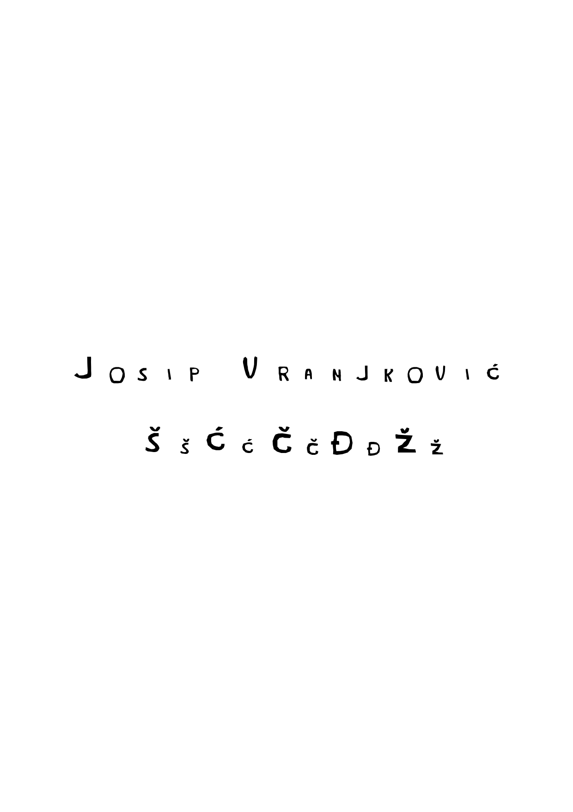
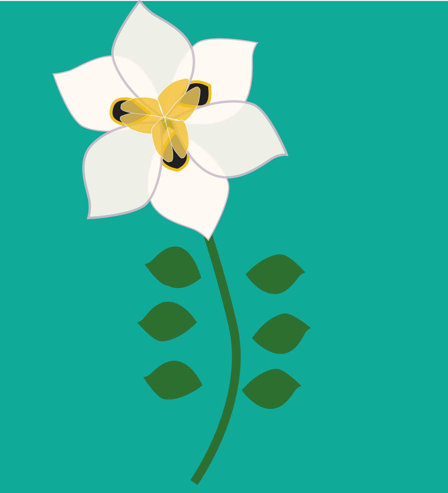
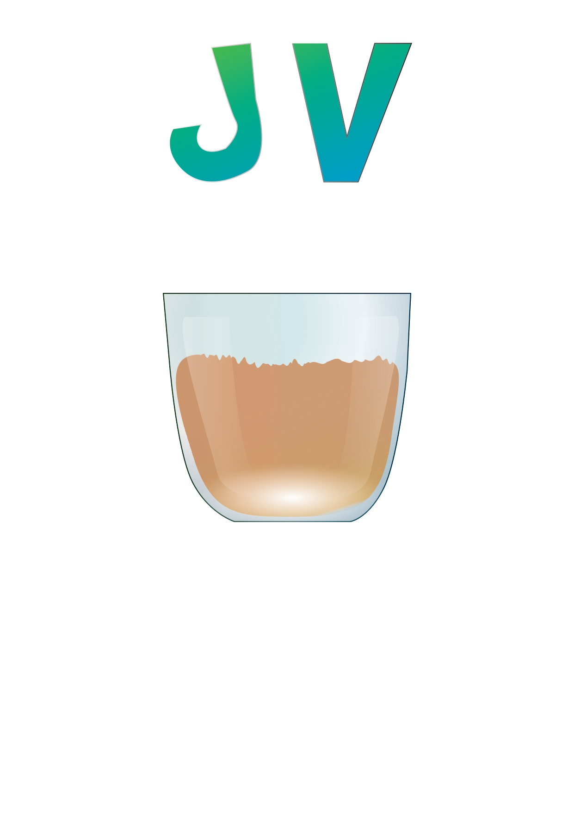
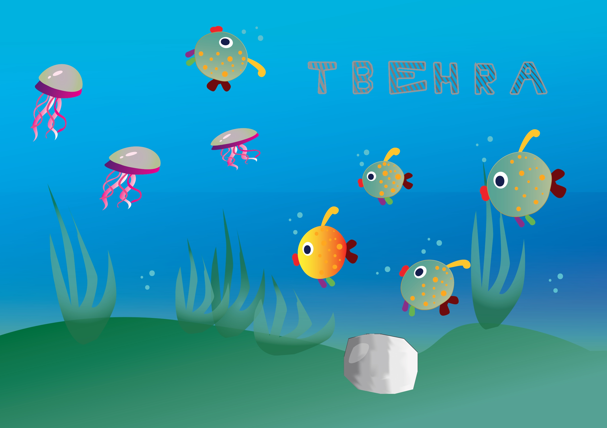
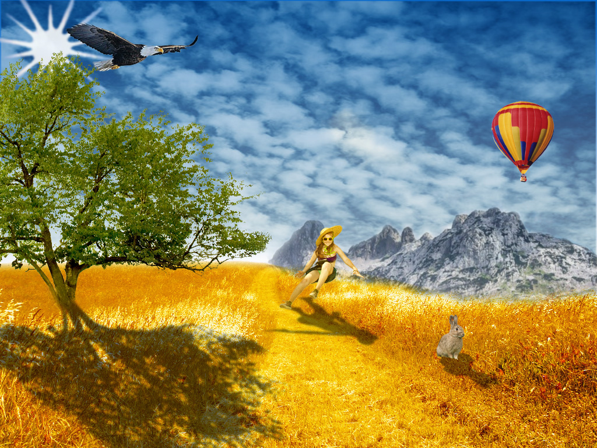

VRATI ME NA POČETNU STRANICU
Vježba 1

Vježba 2
Vježba 3

Vježba 4

Projektni zadatak 1

Vježba 5
Vježba 6
Vježba 7

Projektni zadatak 2
Vježba 8

Vježba 9
Vježba 10
U ovoj vježbi bilo je potrebno napraviti svoju stranicu.
Link za moju stranicu
IDI NA O MENI IDI NA MOJ VIDEO